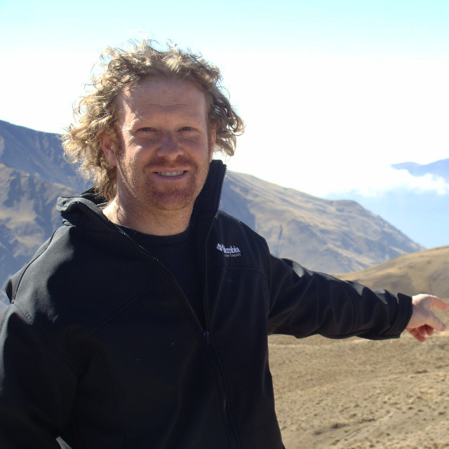

Mariano Daniel Francisco
Licenciado en informática
CIIE Tordillo
DGCyE - DFC


Licenciado en informática
CIIE Tordillo
DGCyE - DFC


Hola a todos, soy Mariano y vivo en Argentina, desde muy chico estoy en contacto con la tecnología. A los 13 años comencé a programar en forma autodidacta con el lenguaje Basic, de esa época hoy ya pasaron 35 años. Después de unos años me titulé como técnico en electrónica, analista de sistemas de información y luego como licenciado en informática. También soy perito en informática.
Actualmente me desenpeño en diversas áreas tales como educación, directivo de un CIIE, docente y capacitador en espacios presenciales y en EVEA. La formación y el estudio nunca deben terminarse, no hay un punto final.
Me interesa mucho el tema de virtualización y administración sistemas, Xenserver y VMware, la conectividad y las redes, obtuve mi CCNA en el 2002. En cuanto a lenguajes me facina programar scripts, batch o rutinas cortas que personalizan actividades rutinarias. Hace un tiempo comencé a indagar en Arduino y sus aplicaciones y usos. Por supuesto usando C++. Así como las matemáticas y sus aplicaciones en la programación. Por último soy activista del Software Libre dando charlas donde pueda sobre la ética y las ventajas de su uso en ámbitos particulares y en educación. Obviamente uso GNU/Linux desde hace más de 20 años en forma alternada y ya 15 años de forma exclusiva.
Con respecto a Github, y "git" esta es mi primer experiencia y me encuentro muy complacido ya que lo veo con un gran potencial para desarrollar proyectos compartidos.
Muchas gracias por esta oportunidad de capacitarme. Mariano.
| Introducción a Linux como entorno de desarrollo de sistemas software. |
| Otros... |